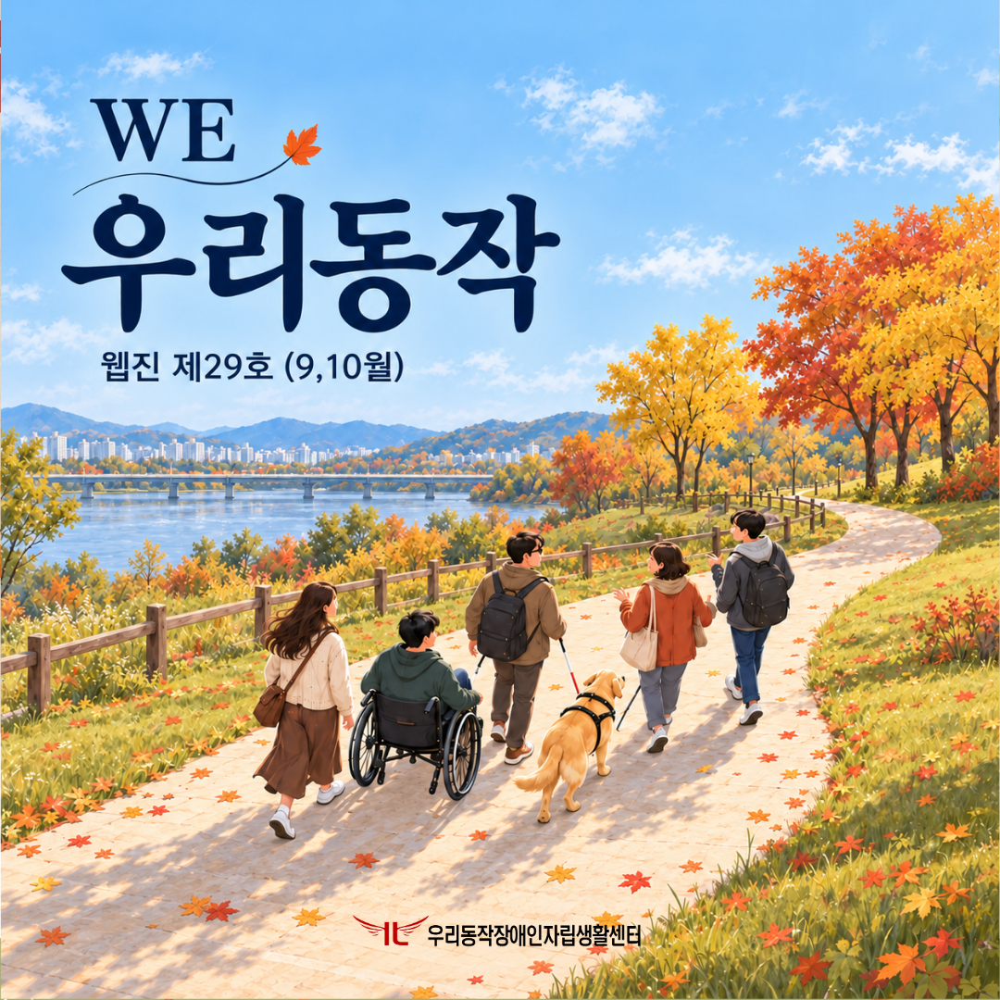
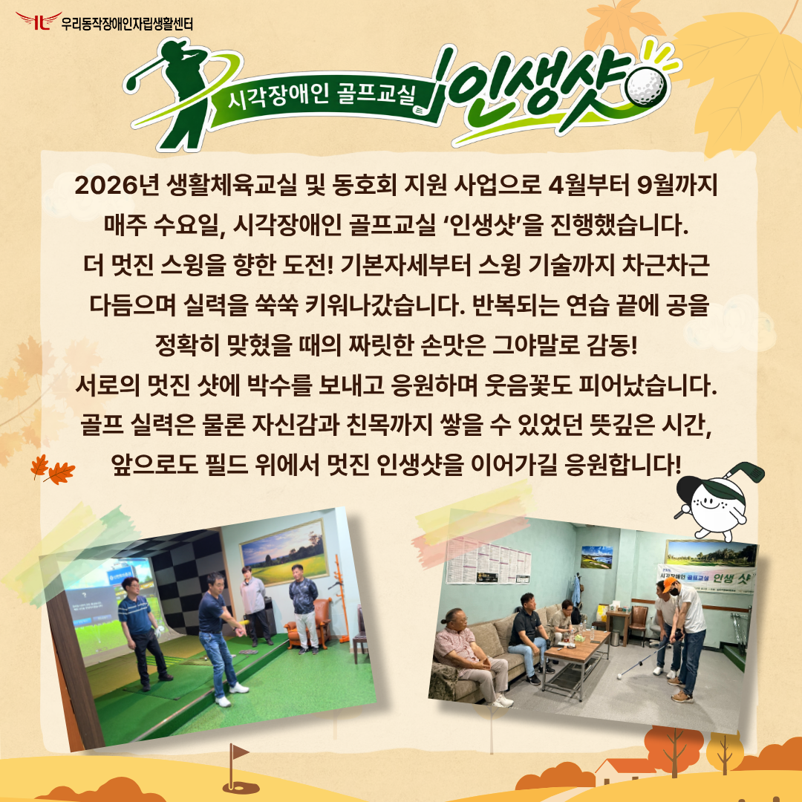
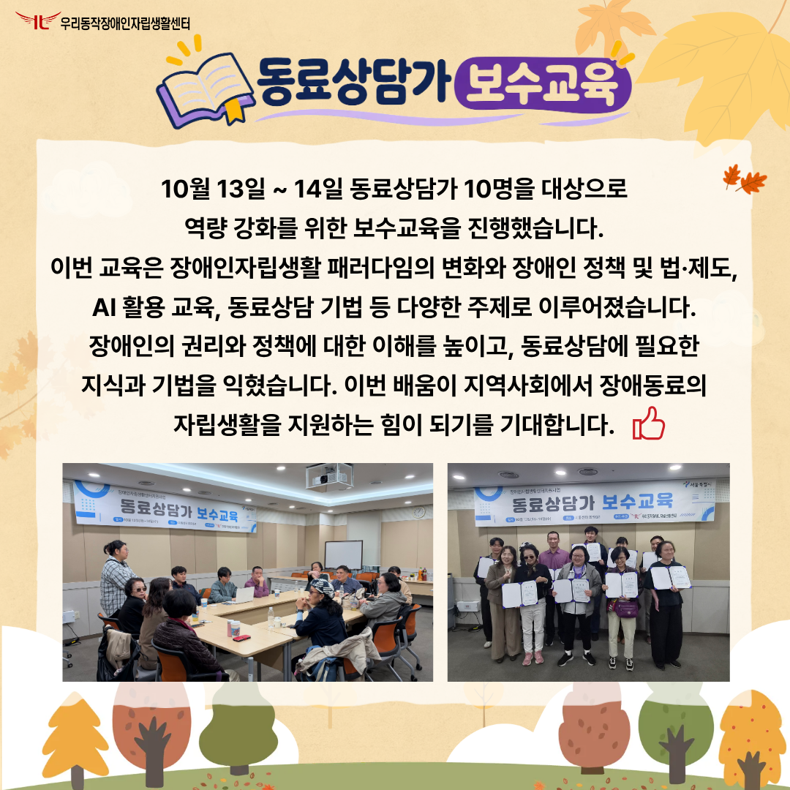
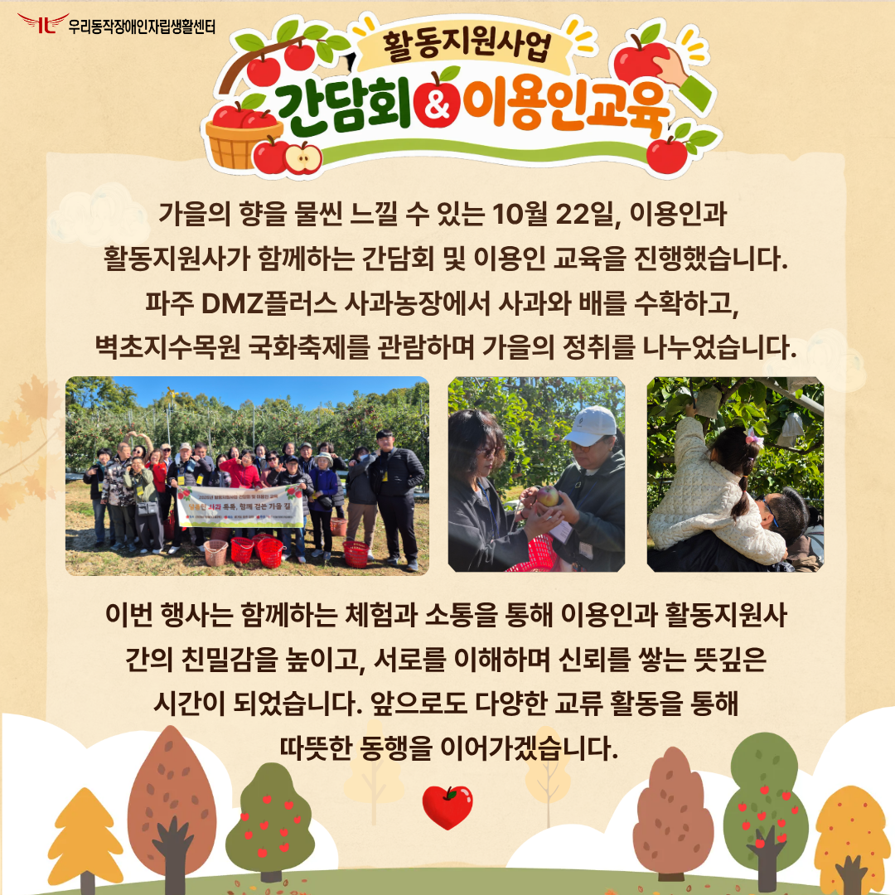
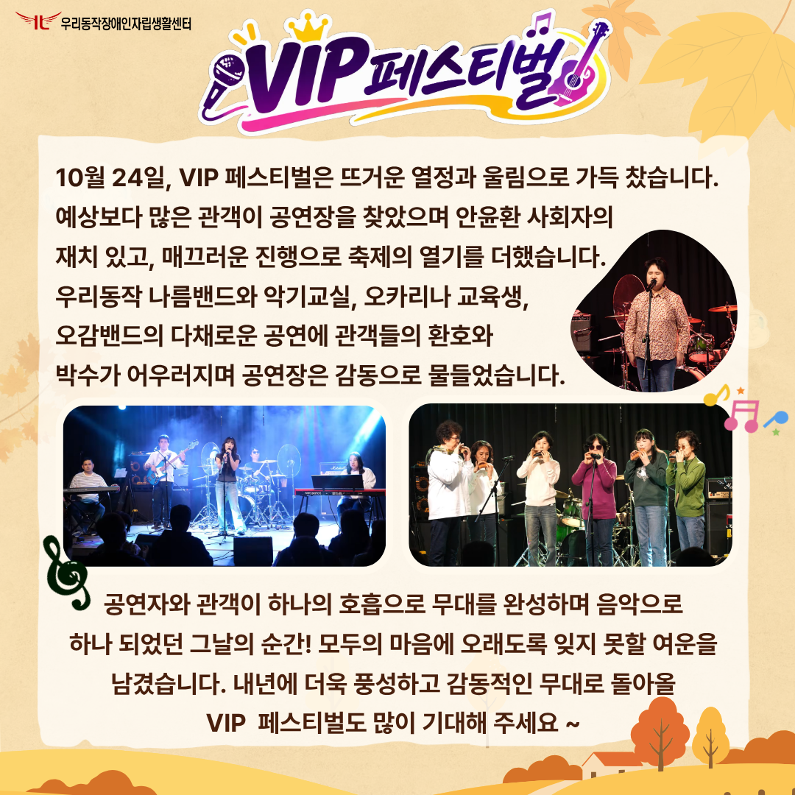
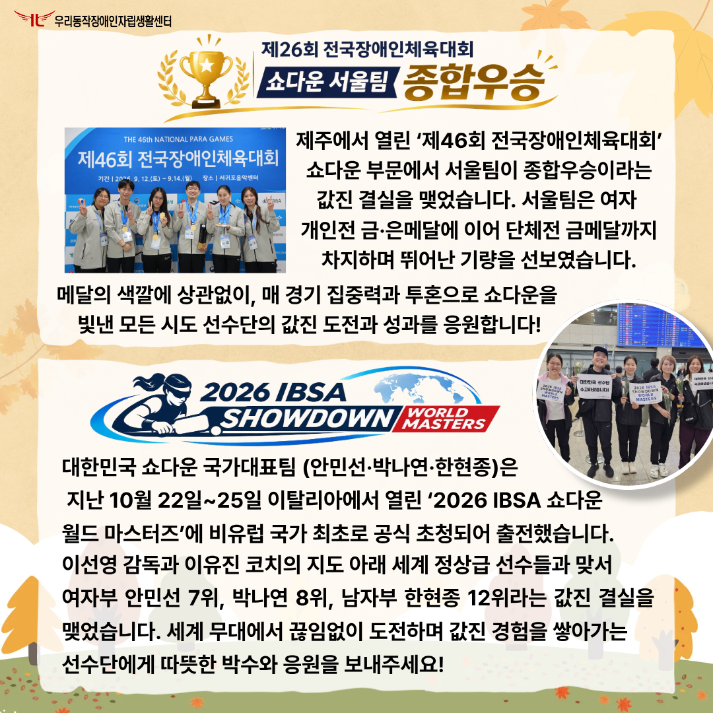
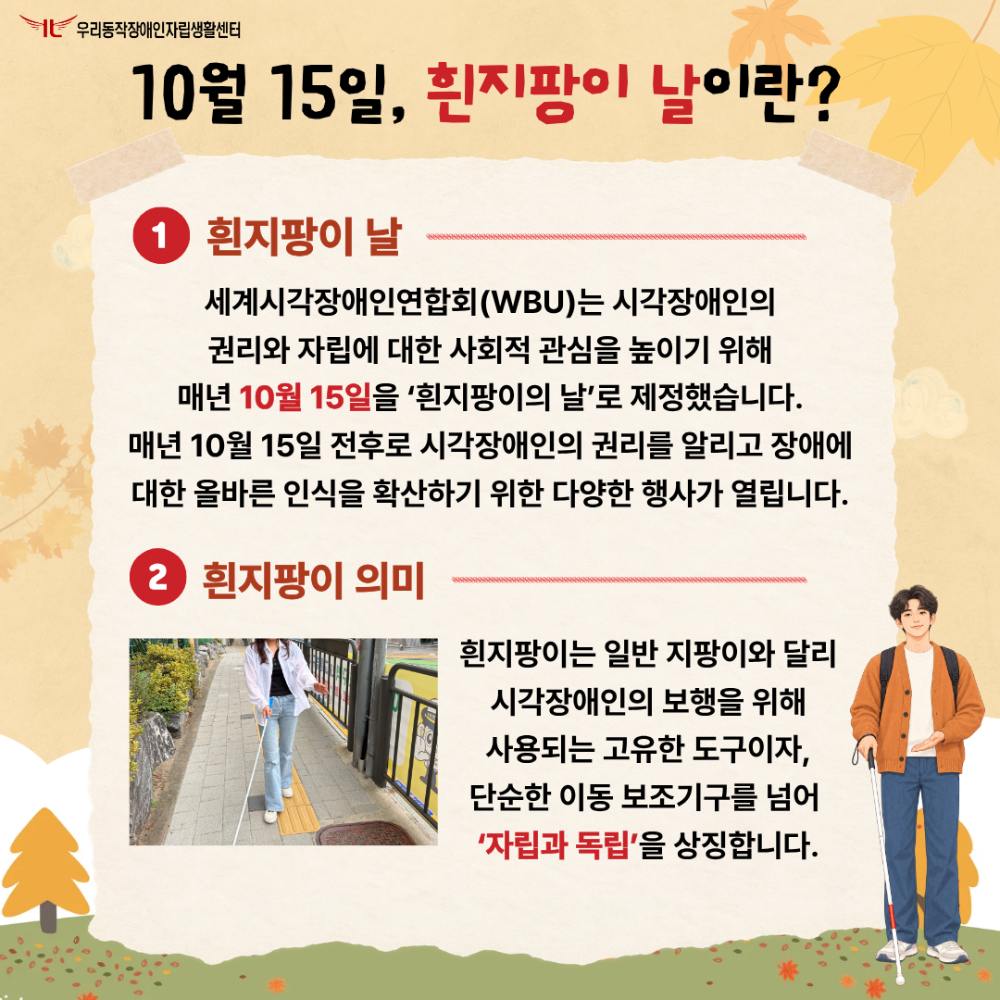
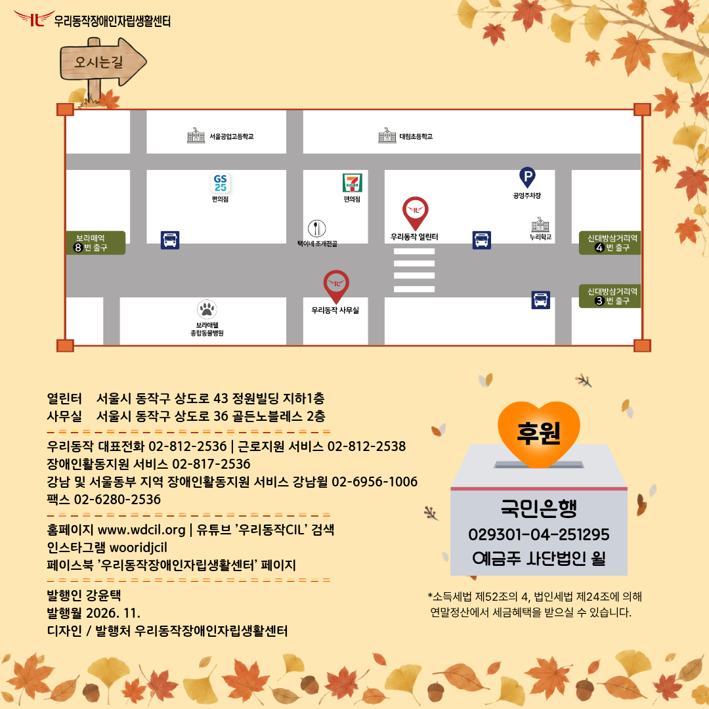

우리동작 제29호 웹진 (9·10월)
제29호 우리동작 웹진

안녕하세요. 제29호 우리동작 웹진을 발간하였습니다. 표지 설명: 한강을 따라 가을 낙엽이 아름답게 흩날리고, 주황색과 노란색으로 물든 단풍나무가 늘어선 산책길을 다섯 명의 사람들이 함께 걷고 있는 모습. 그중 한 명은 휠체어를 이용하고 있으며, 다른 한 명은 흰지팡이를 들고 안내견과 함께 걷고 있다.
시각장애인 골프교실 인생샷

시각장애인 골프교실 인생샷. 2026년 생활체육교실 및 동호회 지원 사업으로 4월부터 9월까지 매주 수요일, 시각장애인 골프교실 ‘인생샷’을 진행했습니다. 더 멋진 스윙을 향한 도전! 기본자세부터 스윙 기술까지 차근차근 다듬으며 실력을 쑥쑥 키워나갔습니다. 반복되는 연습 끝에 공을 정확히 맞혔을 때의 짜릿한 손맛은 그야말로 감동! 서로의 멋진 샷에 박수를 보내고 응원하며 웃음꽃도 피어났습니다. 골프 실력은 물론 자신감과 친목까지 쌓을 수 있었던 뜻깊은 시간, 앞으로도 필드 위에서 멋진 ‘인생샷’을 이어가길 응원합니다! 사진 설명: 참여자들에게 올바른 골프 자세를 지도하는 강사와 진지한 자세로 수업에 임하며 골프 연습에 집중하는 참여자들의 모습.
동료상담가 보수교육

동료상담가 보수교육. 10월 13일부터 14일까지 동료상담가 10명을 대상으로 동료상담 역량 강화를 위한 보수교육을 진행했습니다. 이번 교육은 장애인자립생활 패러다임의 변화와 장애인 정책 및 법·제도, AI 활용 교육, 동료상담 기법 등 다양한 주제로 이루어졌습니다. 장애인의 권리와 정책에 대한 이해를 높이고, 동료상담에 필요한 지식과 기법을 익혔습니다. 이번 배움이 지역사회에서 장애동료의 자립생활을 지원하는 힘이 되기를 기대합니다. 사진 설명: 서로 의견을 나누며 웃음꽃을 피우는 동료상담가들의 모습. 보수교육 수료증을 들고 함께 촬영한 단체사진.
활동지원사업 간담회 및 이용인교육

활동지원사업 간담회와 이용인교육. 가을의 향을 물씬 느낄 수 있는 10월 22일, 이용인과 활동지원사가 함께하는 간담회 및 이용인 교육을 진행했습니다. 파주 DMZ플러스 사과농장에서 사과와 배를 수확하고, 벽초지수목원 국화축제를 관람하며 가을의 정취를 나누었습니다. 이번 행사는 함께하는 체험과 소통을 통해 이용인과 활동지원사 간의 친밀감을 높이고, 서로를 이해하며 신뢰를 쌓는 뜻깊은 시간이 되었습니다. 앞으로도 다양한 교류 활동을 통해 따뜻한 동행을 이어가겠습니다. 사진 설명: 사과밭에서 함께 촬영한 단체사진, 직접 수확한 사과를 이리저리 살펴보는 참여자들, 아버지와 아이가 함께 사과를 따는 모습.
VIP 페스티벌

VIP 페스티벌. 10월 24일, VIP 페스티벌은 뜨거운 열정과 울림으로 가득 찼습니다. 예상보다 많은 관객이 공연장을 찾았으며 안윤환 사회자의 재치 있고 매끄러운 진행으로 축제의 열기를 더했습니다. 우리동작 나름밴드와 악기교실, 오카리나 교육생, 오감밴드의 다채로운 공연에 관객들의 환호와 박수가 어우러지며 공연장은 감동으로 물들었습니다. 공연자와 관객이 하나의 호흡으로 무대를 완성하며 음악으로 하나 되었던 그날의 순간! 모두의 마음에 오래도록 잊지 못할 여운을 남겼습니다. 내년에 더욱 풍성하고 감동적인 무대로 돌아올 VIP 페스티벌도 많이 기대해 주세요! 사진 설명: 악기교실 보컬 수강생의 열정적인 노래 무대, 오감밴드의 신나는 공연, 오카리나 교육생들이 선보이는 다채로운 연주 무대.
제46회 전국장애인체육대회 쇼다운 서울팀 종합우승과 2026 IBSA 쇼다운 월드 마스터즈

제46회 전국장애인체육대회 쇼다운 서울팀 종합우승. 제주에서 열린 ‘제46회 전국장애인체육대회’ 쇼다운 부문에서 서울팀이 종합우승이라는 값진 결실을 맺었습니다. 서울팀은 여자 개인전 금·은메달에 이어 단체전 금메달까지 차지하며 뛰어난 기량을 선보였습니다. 메달의 색깔에 상관없이, 매 경기 집중력과 투혼으로 쇼다운을 빛낸 모든 시도 선수단의 값진 도전과 성과를 응원합니다! 사진 설명: 목에 메달을 걸고 파이팅 포즈를 취하고 있는 쇼다운 서울 대표팀 단체사진. 2026 IBSA 쇼다운 월드 마스터즈. 대한민국 쇼다운 국가대표팀 안민선, 박나연, 한현종 선수는 지난 10월 22일부터 25일까지 이탈리아에서 열린 ‘2026 IBSA 쇼다운 월드 마스터즈’에 비유럽 국가 최초로 공식 초청되어 출전했습니다. 이선영 감독과 이유진 코치의 지도 아래 세계 정상급 선수들과 맞서 여자부 안민선 7위, 박나연 8위, 남자부 한현종 12위라는 값진 결실을 맺었습니다. 세계 무대에서 끊임없이 도전하며 값진 경험을 쌓아가는 선수단에게 따뜻한 박수와 응원을 보내주세요! 사진 설명: 쇼다운 대한민국 국가대표팀이 환영 문구가 적힌 피켓을 들고 환하게 웃는 모습.
10월 15일, 흰지팡이의 날이란?

10월 15일, 흰지팡이의 날이란? 첫 번째, 흰지팡이의 날. 세계시각장애인연합회 WBU는 시각장애인의 권리와 자립에 대한 사회적 관심을 높이기 위해 매년 10월 15일을 ‘흰지팡이의 날’로 제정했습니다. 매년 10월 15일 전후로 시각장애인의 권리를 알리고 장애에 대한 올바른 인식을 확산하기 위한 다양한 행사가 열립니다. 두 번째, 흰지팡이의 의미. 흰지팡이는 일반 지팡이와 달리 시각장애인의 보행을 위해 사용되는 고유한 도구이자, 단순한 이동 보조기구를 넘어 ‘자립과 독립’을 상징합니다. 사진 설명: 흰지팡이를 활용해 보행하는 모습, 흰지팡이를 들고 있는 남성 일러스트.
오시는 길 및 후원 안내

만족도 조사 참여하기오시는 길. 오른쪽 상단의 만족도 조사 버튼을 통해 의견을 남겨주시면, 우리동작 웹진의 발전과 개선에 큰 도움이 됩니다. 후원 안내. 국민은행 029301-04-251295. 예금주 사단법인 윌. 소득세법 제52조의 4, 법인세법 제24조에 의해 연말정산에서 세금혜택을 받으실 수 있습니다. 열린터: 서울시 동작구 상도로 43, 정원빌딩 지하 1층. 사무실: 서울시 동작구 상도로 36, 골든노블레스 2층. 우리동작 대표전화 02-812-2536. 근로지원 서비스 02-812-2538. 장애인활동지원 서비스 02-817-2536. 강남 및 서울동부 지역 장애인활동지원 서비스 강남윌 02-6956-1006. 팩스 02-6280-2536. 홈페이지 www.wdcil.org. 유튜브 ‘우리동작CIL’ 검색. 인스타그램 wooridjcil. 페이스북 ‘우리동작장애인자립생활센터’ 페이지. 발행인 강윤택. 발행월 2026년 11월. 디자인 및 발행처 우리동작장애인자립생활센터.